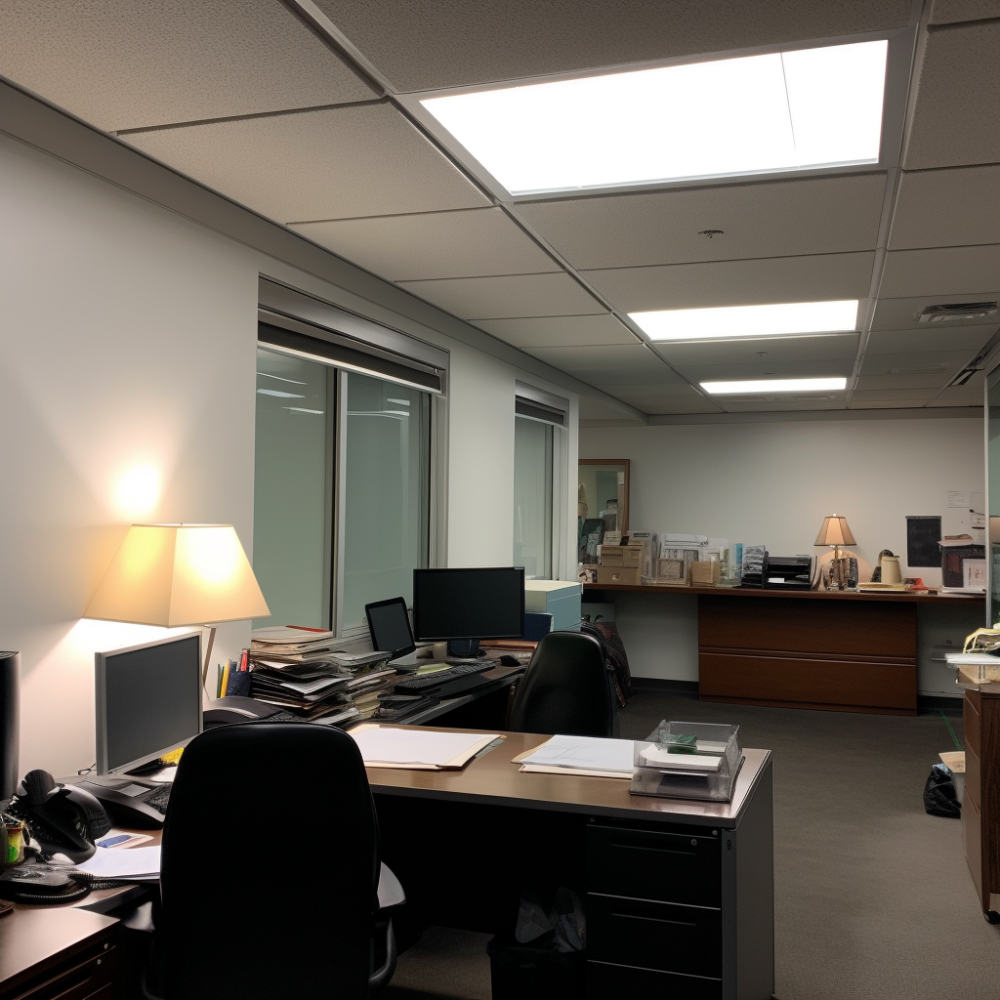
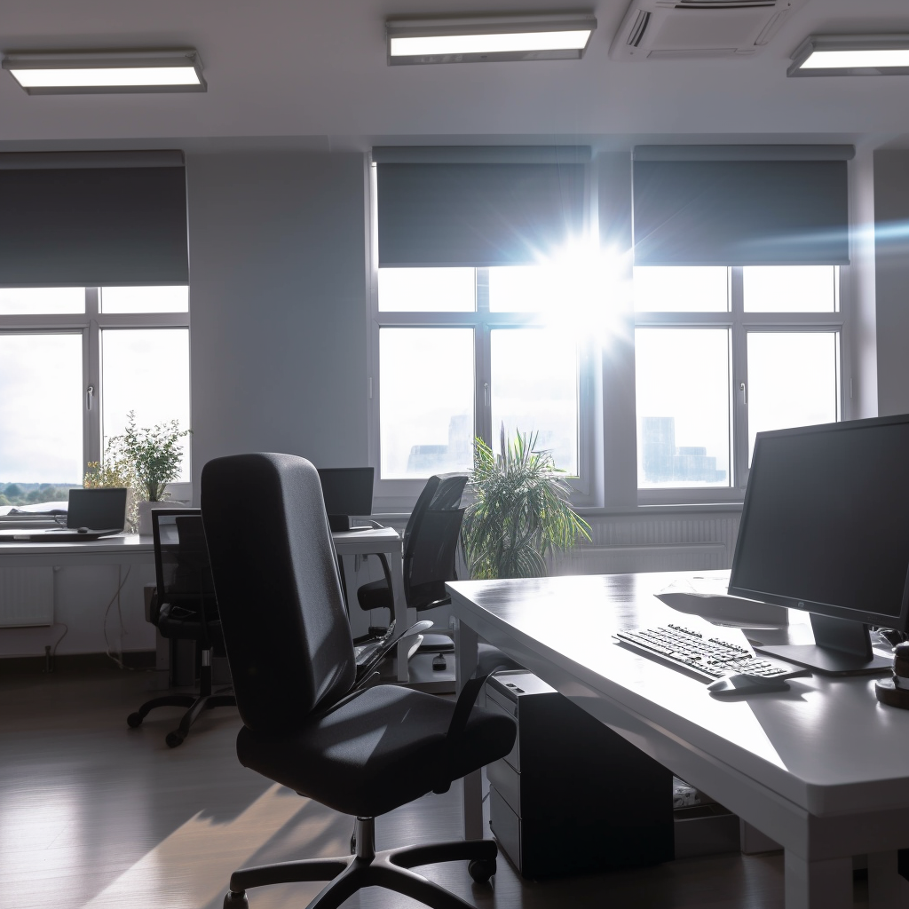
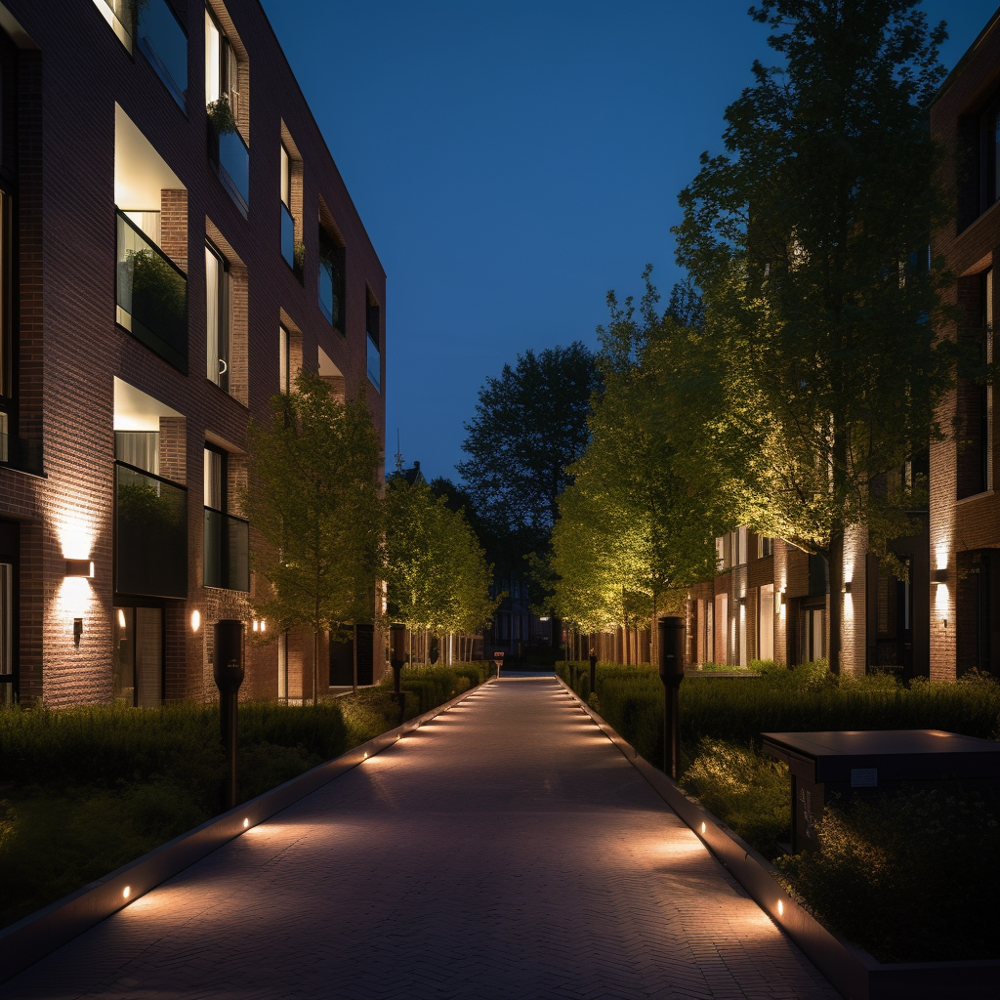

Unified Glare Rating (UGR), sometimes referred to as RUG or RUG limit value (RUGL or UGR l), is a measure used to evaluate the level of discomfort caused by glare from light sources in indoor spaces. The importance of UGR lies in the fact that glare can cause discomfort, eye strain, and even headaches, leading to a decrease in productivity and overall well-being.
With the increased emphasis on indoor lighting design in recent years, it has become imperative to take into account the level of glare caused by artificial lighting sources. This is where the concept of UGR comes in handy, as it helps in designing lighting systems that not only provide adequate illumination but also ensure minimal glare and maximum visual comfort.
This blog article aims to provide a comprehensive understanding of UGR, its calculation, acceptable values, importance of non-uniformity, and the use of UGR in outdoor residential lighting.
What is UGR?
UGR is a measure of the discomfort caused by the glare from light sources in indoor spaces. It is based on a mathematical formula that takes into account the solid angle subtended by the luminous area of the luminaire, position of the luminaire, background luminance and average luminance over the luminous area.
Several factors influence the UGR rating of a lighting system, including the placement of light fixtures, the number and intensity of light sources, size- shape- and composition- of the light source, the reflectivity of surfaces in the room, and the observer's position.
The formula used to calculate UGR involves a series of calculations where the final result is a number typically limited (RUGL) to values ranging from 16 and 28, with lower values indicating less discomfort caused by glare. A UGR rating of 19 or below is generally considered acceptable for most indoor spaces (i.e., offices, classrooms, laboratories etc.), with values higher than that indicating an increased level of discomfort caused by glare.
In summary, UGR is a measure of the level of discomfort caused by glare from light sources in indoor spaces, and its calculation takes into account several factors.
What is an Acceptable UGR Value?
When it comes to UGR values, what is considered "good" or "acceptable" can depend on the type of environment and the specific task being performed. Generally, a UGR value below 19 is considered low and will provide a comfortable level of lighting for most indoor spaces. However, in areas where precise visual tasks are performed, such as reading or detailed assembly work, a UGR value of 16 or lower may be required to prevent discomfort and visual fatigue.
Different countries have their own guidelines for UGR values in different types of spaces. For example, in Europe, the European Standard EN 12464-1 provides UGR recommendations for various indoor environments. In general, it recommends a UGR value of 19 or less for offices, classrooms, and retail spaces, and a UGR value of 22 or less for industrial spaces.
It is worth noting that these requirements are just that – minimal requirements – and should be adjusted based on the specific needs and preferences of the space's occupants. For example, a UGR value of 19 may be acceptable for an office space, but if the workers in that space find the lighting uncomfortable or experience visual fatigue, the UGR value may need to be lowered.
Annex A of the revised EN 12464-1:2021
In 2021 the EN 12464-1 was revised where one of the important changes is the addition of annex A ‘Recommended practice regarding implementation of UGR tabular method for 'non-standard' situations’.
The annex basically explains that the UGR methodology is used to select appropriate luminaires for a given space, but it is not an exact prediction of glare. For non-standard situations such as irregular room shapes, the room dimensions can be approximated by fitting it with a rectangle. If multiple luminaire types are used, the UGR should be determined for each type, and the highest UGR value should be referenced against the set limiting value for the worst-case scenario. The UGR methodology does not apply to totally indirect luminaires, up-lighters, or luminous ceilings. Room dimensions larger than 12H require further analysis to determine if the UGR method should be used or if disability glare could be more important than discomfort glare.
UGR and non-uniformity
To calculate the UGR, traditionally, a conversion from luminance to far field intensity is applied for the calculation of UGR. However, with the use of LEDs, non-uniform lighting sources have become more common, and it has been shown that non-uniformity is an essential factor in quantifying discomfort glare.
Traditionally, UGR has been calculated using a formula that assumes a uniform luminance distribution across the glare source. However, recent research has shown that this assumption is not valid for many LED luminaires, which have a non-uniform luminance distribution. This can result in UGR values that do not accurately reflect the discomfort glare experienced by observers.
Studies have shown that the discomfort glare assessment varies widely between non-uniform and uniform panels, even for the same calculated UGR value. In other words, UGR as it is defined today is not good enough for LED luminaires. Researchers have proposed different ways to correct the UGR formula to make it also valid for non-uniform luminance glare sources.
One proposed solution is to determine a more relevant value of the glare source luminance based on the actual luminance distribution, called the effective luminous area. This approach uses a high-resolution luminance image of the luminaire obtained with an imaging luminance-measuring device (ILMD). Only pixels with a luminance value of higher than 500 cd/m2 are counted towards the effective luminous area.
The importance of non-uniformity in calculating the UGR cannot be overstated. Failure to account for non-uniformity can lead to inaccurate and potentially unsafe lighting conditions. Therefore, it is crucial to consider the luminance distribution of the glare source when calculating UGR values. This will ensure that the UGR system is an effective tool for assessing discomfort glare in a wide range of lighting applications, including those that use LED luminaires.
UGR and outdoor lighting
Despite the widespread acceptance and use of CIE UGR for indoor lighting, there is no such unification of discomfort glare indices for outdoor (residential) lighting, even though most current outdoor glare matrices consider similar factors as in UGR.
The Unified Glare Rating (UGR) is a well-known glare index that is widely used in indoor lighting to evaluate the amount of discomfort glare. However, the application of the UGR in outdoor (residential) lighting has been limitedly explored. In outdoor lighting, discomfort glare is an important factor that needs to be considered, especially in residential areas where non-uniform lighting sources are commonly used. Currently the CIE technical committee is tasked with creating a generic discomfort glare sensation model that may lead to such unified model in the future.
Conclusion
In conclusion, Unified Glare Rating (UGR) is an essential measure to ensure visual comfort and productivity in indoor spaces. The calculation of UGR takes into account several factors, including the solid angle subtended by the luminous area, position of the luminaire, background luminance, and average luminance over the luminous area. Generally, a UGR value below 19 is considered acceptable for most indoor spaces. However, the specific needs and preferences of the space's occupants should be taken into consideration. With the introduction of LED luminaires, non-uniformity has become an essential factor in quantifying discomfort glare. To address this need, researchers have proposed different ways to correct the UGR formula to make it also valid for non-uniform luminance glare sources. The CIE introduced the UGR' in 2019 as an extension of the UGR to address the need for a discomfort glare rating for non-uniform outdoor (residential) lighting. In summary, understanding UGR is crucial to designing lighting systems that provide adequate illumination while ensuring minimal glare and maximum visual comfort.
Click here to learn more.This text was written with help of ChatGPT and the figures were generated using Midjourney.
If you're interested in learning more about this research, feel free to reach out!
Rik Spieringhs